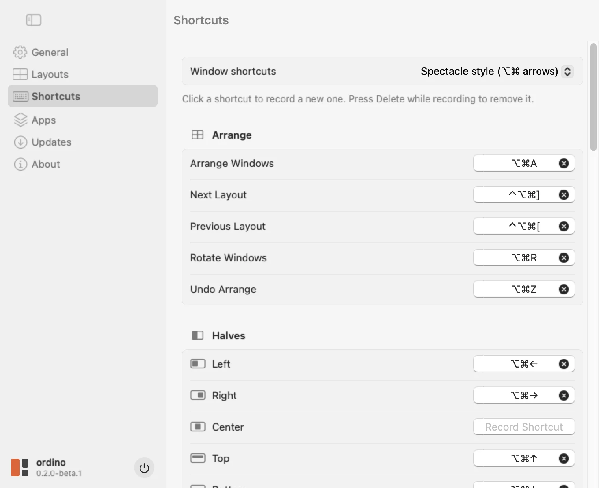
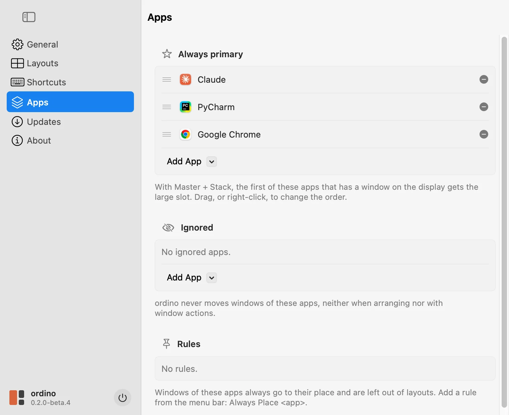
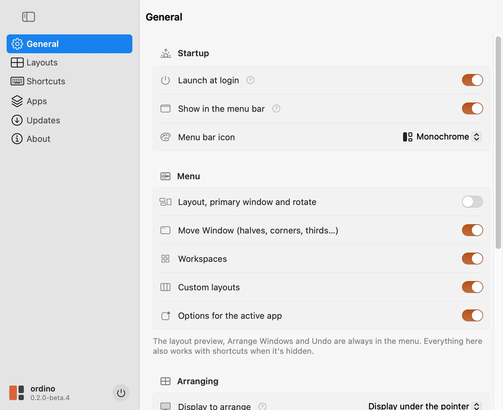
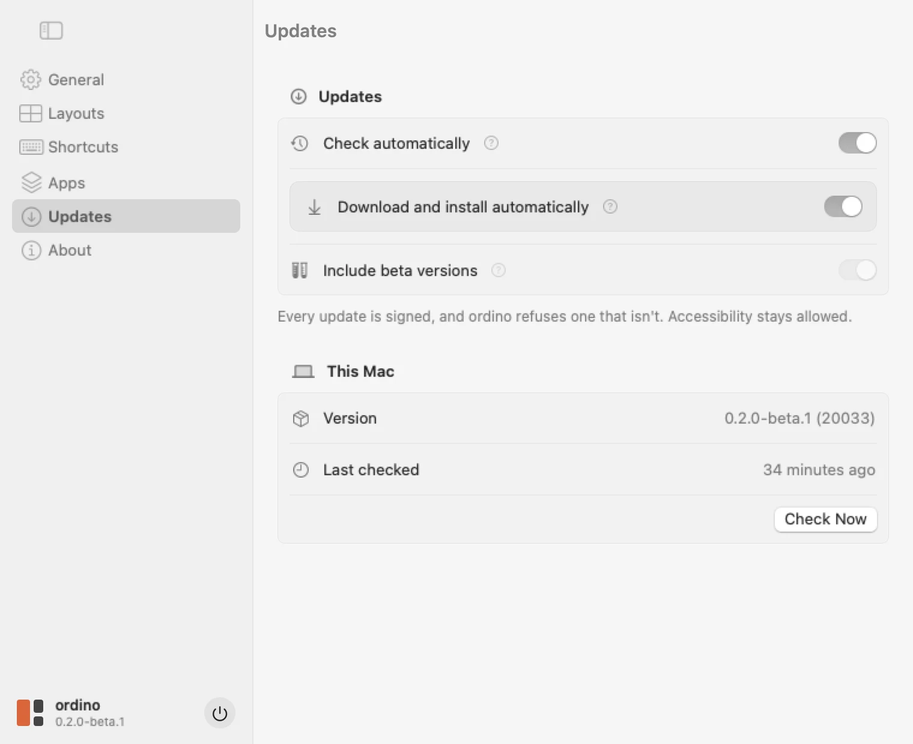
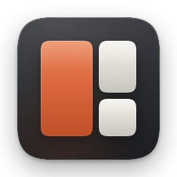

Picks a layout by window count
One window is maximized, two sit side by side, three get a primary and a stack, four a 2×2 grid, five to nine a grid.
1
2
3
4
6
Free for MacVersion 0.2.0-beta.1 · 3.6 MB
Press ⌃⌥⌘A and ordino arranges every window on the display, picking the layout by window count and screen shape. For macOS 14 Sonoma or later.
One window is maximized, two sit side by side, three get a primary and a stack, four a 2×2 grid, five to nine a grid.
On an ultrawide display ordino prefers columns and centres a lone window. On a portrait display it prefers rows.
The window you work in takes the large slot. Pick another in the menu, or click its slot in the preview.
Press ⌃⌥⌘A again within 2 seconds for the next layout. ⌃⌥⌘Z undoes a run of quick presses in one step.
Halves, corners, thirds, fourths, sixths, maximize and center. Press ⌃⌥← again to go from 1/2 to 2/3 to 1/3. Rectangle-style keys by default, Spectacle-style as a preset.
List the apps whose window always takes the large slot, in order. Apps you ignore are never moved.
Arrange the display under the pointer, try the next layout on a second press, and choose when a confirmation shows.
ordino checks, downloads and installs updates by itself, or when you press Check Now.




Arranging a screen that is already arranged changes nothing. ⌃⌥⌘R rotates the windows through the slots.
Download the zip, double-click it and drag ordino into the Applications folder.

ordino Applicationsordino is not notarized, so macOS can't verify the developer. Click Done, then Open Anyway in Privacy & Security.
The welcome window asks for Accessibility. The permission stays on through every update.
Privacy, requirements and other window managers.
No. It uses only the Accessibility permission, to read window positions and move windows. There are no analytics and nothing leaves your Mac.
Macs with macOS 14 Sonoma or later, Apple silicon and Intel. The app is universal and about 3.6 MB.
Nothing. ordino is free and needs no account.
When another window manager such as Rectangle is running, ordino leaves its window shortcuts unassigned. You can set them in Settings.
ordino learns each window's minimum size. Its neighbours shrink instead of overlapping it.
On their own. Every update is signed with EdDSA, and ordino refuses one that isn't.